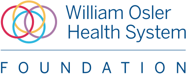
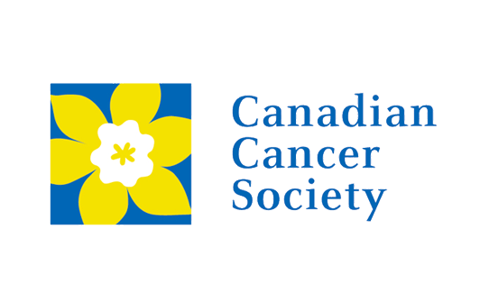

Experiences
Software Developer Intern
Go Fleet Corporation
Mississauga, ON
April 2021 - Present
- Building an interactive vehicle metrics dashboard using Angular, Typescript, jQuery, HTML/CSS to integrate real-time telematics data from hardware products
- Identifying critical UI bugs, conducting security clearance testing and API testing with SoapUI with SmartWitness and Surfsight GPS cameras for hundreds of users
- Architecting user flow of web and app platforms by coordinating with UX designers
- Leading weekly sprint reviews and managing JIRA for the bug board
Hardware Engineering Member
Midnight Sun Solar Race Car Team
Waterloo, ON
May 2021 - Present
- Sourcing high voltage wires for the vehicle by researching voltage ratings, material specifications and conductor cross-sectional area
- Learning to create wiring diagrams and using Altium to design a test board to interface with STM32 peripherals
Embedded Firmware Developer
Formula Electric Vehicle Team
Waterloo, ON

May 2021 - Present
- Implementing unit integration tests for DCU board using Unity and CMock to run on the microcontrollers
- Learning to develop a C program to communicate with the DCU board over CAN to initiate and control charging
Full Stack Developer
TecHacks
Remote
November 2020 - Present
- Rebuilt organizational website from scratch using HTML, CSS and JavaScript for 800+ hackers worldwide
- Deployed a newsletter sign-up web app created using Node.js, that integrated the MailChimp API and leveraged Express, Body-parser, Request and HTTPS modules
- Collaborated in an agile team and designed UI/UX prototypes on Figma to improve end user experience
- Coded a contact form with PHP/JavaScript
Product Management Intern
Upkey
Chicago, IL (Remote)
June 2020 - Aug 2020
- Led a team of 6 to redesign a previously ineffective virtual training module with a new product that leverages AI to enhance the current offerings, after analyzing past data reports and surveying 400+ customers for input
- Utilized Excel to organize and present data visualization findings to stakeholders during weekly follow-up meetings
- Pitched a product proposal to over 100+ attendees
Chapter President & Volunteer
Plan International Canada
Toronto, ON
September 2017 - June 2020
- Led a team of 20+ students, raising $2,000+ within 8 months, by overseeing all weekly meetings and delegating tasks
- Communicated with sponsors and directed the planning of a conference with an exceeded turnout of 50+ attendees
- Planned nation wide initiatives during the Speaker’s Bureau and was invited to represent Toronto as an ambassador at the National Youth Summit
Hospital Volunteer, CT Scan & Gift Shop
Etobicoke General Hospital
Toronto, ON
July 2018 - July 2020
- Triaged patients, booked appointments, reviewed outpatients and maintained under 20 minute wait times
- Sterilized procedural room, refilled medical equipment stocks and provided verbal instructions to patients
- Set up gift shop displays, managed inventories and served over 300 customers/patients
Daffodil Pin Campaign Volunteer
Canadian Cancer Society
Toronto, ON
March 2019 - April 2019
- Set up a donation booth for 50+ people
- Sold daffodils to raise money for cancer research
- Raised over $200 in donations within the first hour
Leading to Reading Mentor
Toronto Public Library
Toronto, ON
June 2016 - June 2018
- Assisted a child, recent immgrant, to help him improve his English skills
- Created weekly content modules and designed revision tests
- Played educational games and tracked monthly progress using Excel
© 2021 Achira Sarker.